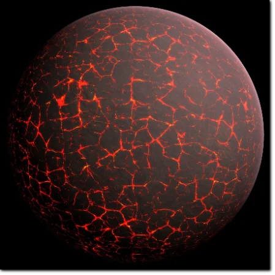
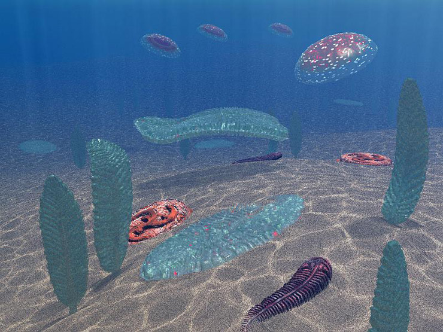

la Terre
1. introduction

La Terre est la troisième planète par ordre d'éloignement au Soleil et la cinquième plus grande du Système solaire aussi bien par la masse que par le diamètre. Par ailleurs, elle est le seul objet céleste connu pour abriter la vie. Elle orbite autour du Soleil en 365,256 jours solaires et réalise une rotation sur elle-même relativement au Soleil en un jour sidéral (environ 23 h 56 min 4 s), soit un peu moins que son jour solaire de 24 heures du fait de ce déplacement autour du Soleil. L'axe de rotation de la Terre possède une inclinaison de 23°, ce qui cause l'apparition des saisons. la Terre s'est formée il y a 4,54 milliards d'années. Elle possède un unique satellite naturel, la Lune, qui s'est formée elle. L'interaction gravitationnelle avec son satellite crée les marées, stabilise son axe de rotation et réduit graduellement sa vitesse de rotation. La vie serait apparue dans les océans il y a au moins 3,5 milliards d'années, ce qui a affecté atmosphère et surface terrestres par la prolifération d'organismes
2. chronologie de la Terre

a) l'Hadéen

L'Hadéen débute il y a 4,54 milliards d'années (Ga), lorsque la Terre se forme en même temps que les autres planètes à partir d'une nébuleuse solaire une masse de poussières et de gaz en forme de disque, détachée du Soleil en formation. La formation de la Terre par accrétion se termine en moins de 20 millions d'années. Initialement en fusion, la couche externe de la Terre se refroidit pour former une croûte solide lorsque l'eau commence à s'accumuler dans l'atmosphère, aboutissant aux premières pluies et aux premiers océans. La Lune se forme peu de temps après, il y a 4,53 milliards d'années. Le consensus concernant la formation de la Lune est l'hypothèse de l'impact géant, selon laquelle un impacteur communément appelé Théia, de la taille de Mars et de masse environ égale au dixième de la masse terrestre, serait entré en collision avec la Terre. Dans ce modèle, une partie de cet objet se serait agglomérée avec la Terre tandis qu'une autre partie, mêlée avec environ 10 % de la masse totale de la Terre, aurait été éjectée dans l'espace puis se serait agglomérée pour former la Lune.
L'activité volcanique qui suit l'impact, associée aux très importantes températures (jusqu'à 10 000 °C), produit une atmosphère primitive par dégazage. De la vapeur d'eau condensée ayant plusieurs origines possibles, mêlée à de la glace apportée par des comètes, produit les océans lorsque les températures baissent. Les gaz à effet de serre de cette atmosphère permettent de maintenir une température compatible avec la présence d'eau liquide à la surface de la Terre et empêchent les océans de geler alors que la planète ne recevait qu'environ 70 % de la luminosité solaire actuelle.
Deux principaux modèles sont proposés pour expliquer la vitesse de croissance continentale : une croissance constante jusqu'à nos jours et une croissance rapide au début de l'histoire de la Terre. Le consensus est que la deuxième hypothèse est la plus probable avec une formation rapide de la croûte continentale suivie par de faibles variations de la surface globale des continents. Sur une échelle de temps de plusieurs centaines de millions d'années, les continents ou supercontinents se forment ainsi puis se divisent.
b) l'Archéen

L'Archéen débuta il y a 4 milliards d'années et est l'ére marqué par les premières traces de vie. Il est supposé qu'une activité chimique intense dans un milieu hautement énergétique a alors permis de produire une molécule capable de se reproduire. La vie elle-même serait apparue entre 200 et 500 millions d'années plus tard, avant environ −3,5 Ga, point de départ de l'évolution de la biosphère. Par ailleurs, la date d'apparition du dernier ancêtre commun universel est estimée entre −3,5 et −3,8 Ga. Parmi les premiers signes de vie, on trouve notamment des biomolécules dans du granite âgé de 3,7 Ga au Groenland ou des traces de carbone potentiellement biogène dans un zircon âgé de 4,1 Ga en Australie. Cependant, la plus ancienne preuve fossilisée de micro-organismes date d'il y a 3,5 Ga et a également été trouvée en Australie. Par ailleurs, vers -3,5 milliards d'années, le champ magnétique terrestre se forme et permet d'éviter à l'atmosphère d'être emportée par le vent solaire.
c) Le Protérozoïque
Le Protérozoïque débute il y a 2,5 Ga et marque l'apparition de la photosynthèse chez les cyanobactéries, produisant de l’oxygène libre O2 et formant des stromatolithes. Cela conduit à un bouleversement écologique majeur vers −2,4 Ga, appelé la Grande Oxydation, en formant la couche d'ozone et en faisant graduellement évoluer l'atmosphère alors riche en méthane en celle actuelle, composée essentiellement de diazote et de dioxygène. C'est toujours la photosynthèse qui permet de maintenir le taux d'oxygène dans l'atmosphère terrestre et qui est à l'origine de la matière organique essentielle à la vie sur Terre. Du fait de l'augmentation de la concentration en oxygène dans l’atmosphère, des organismes multicellulaires appelés eucaryotes (bien que certains d'entre eux sont unicellulaires), plus complexes, voient le jour par un mécanisme supposé être l'endosymbiose. Les plus anciens retrouvés datent de −2,1 Ga et ont été appelés Gabonionta, car découverts au Gabon. Les eucaryotes forment par la suite des colonies et, protégés des rayons ultraviolets par la couche d'ozone, ces formes de vie pourraient avoir dès lors colonisé la surface de la Terre. De -750 à -580 millions d'années, pendant le Néoprotérozoïque, la Terre aurait connu une ou plusieurs séries de glaciations globales qui auraient couvert la planète d'une couche de glace. Cette hypothèse est nommée snowball Earth (« Terre boule de neige »), et est d'un intérêt particulier parce qu'elle précède directement l'explosion cambrienne et pourrait avoir déclenché l'évolution de la vie multicellulaires. Par ailleurs, le plus vieux des supercontinents connus, Rodinia, commence à se disloquer il y a environ 750 millions d'années[46]. Les continents entre lesquels il s'est divisé se recombinent plus tard pour former Pannotia, il y a 650 à 540 millions d'années.
d) Le Phanérozoïque

Le Phanérozoïque est marqué par l'apparition des premiers animaux à coquille. Il débute il y a 541 millions années et s'étend jusqu'à nos jours. Son commencement coïncide avec l'explosion cambrienne, l'apparition rapide de la plupart des grands embranchements actuels de métazoaires (animaux pluricellulaires). Le dernier supercontinent, la Pangée, se forme il y a approximativement 335 millions d'années puis commence à se disloquer il y a 175 millions d'années. Pendant cet éon, la biosphère a connu cinq extinctions massives. La dernière d'entre elles se produit il y a 66 millions d'années, sa cause généralement admise étant une météorite entrée en collision avec la Terre qui aurait créé l'impact de Chicxulub. La conséquence est l'extermination des dinosaures (excepté les aviens) et d'autres grands reptiles, affectant sans les éteindre de plus petits animaux comme les mammifères, les oiseaux, ou encore les lézards. Au cours des 66 Ma suivants, les mammifères se sont diversifiés et, il y a environ 6 Ma, des hominiens comme le Orrorin tugenensis développent la capacité de se tenir debout. Il s'est ensuivi un développement simultané de l'utilisation d'outils et du développement du cerveau au cours de l'histoire évolutive de la lignée humaine. Le développement de l'agriculture puis des civilisations a permis aux humains d'avoir une influence sur la Terre, la nature et les autres formes de vie. Le schéma actuel de périodes glaciaire s'établit au cours du Pléistocène il y a environ 2,6 Ma. Depuis, les régions de latitudes hautes connaissent des cycles de glaciation d'environ 80 000 ans, la dernière s'étant achevée il y a environ 10 000 an.
3. le futur

Le futur de la Terre est très lié à celui du Soleil. Du fait de l'accumulation d'hélium dans le cœur de l'étoile, sa luminosité solaire augmente lentement à l'échelle des temps géologiques. Ainsi, la luminosité va croître de 10 % au cours des 1,1 milliard années à venir et de 40 % sur les prochaines 3,5 milliards d'années. Les modèles climatiques indiquent que l'accroissement des radiations atteignant la Terre aura probablement des conséquences dramatiques sur la pérennité de son climat « terrestre », notamment la disparition des océans. La Terre devrait cependant rester habitable pendant encore plus de 500 millions d'années, cette durée pouvant passer à 2,3 milliards d'années si la pression atmosphérique diminue en retirant une partie de l'azote de l'atmosphère. L'augmentation de la température terrestre va accélérer le cycle du carbone inorganique, réduisant sa concentration à des niveaux qui pourraient devenir trop faibles pour les plantes (10 ppm pour la photosynthèse du C4) dans environ 500 à 900 millions d'années. La réduction de la végétation entraînera la diminution de la quantité d'oxygène dans l'atmosphère, ce qui provoquera la disparition progressive de la plupart des formes de vie animales[68]. Ensuite, la température moyenne de la Terre augmentera plus vite en raison de l'emballement de l'effet de serre par la vapeur d'eau. Dans 1 à 1,7 Ga, la température sera si élevée que les océans s'évaporeront, précipitant le climat de la Terre dans celui de type vénusien, et faisant disparaître toute forme simple de vie à la surface de la Terre. Le Soleil, représenté très rouge, s'approche d'une Terre dont le sol montre du magma Vue d'artiste de la Terre lorsque le Soleil sera une géante rouge Même si le Soleil était éternel et stable, le refroidissement interne de la Terre entraînerait la baisse du niveau de CO2 du fait d'une réduction du volcanisme et 35 % de l'eau des océans descendrait dans le manteau du fait de la baisse des échanges au niveau des dorsales océaniques.